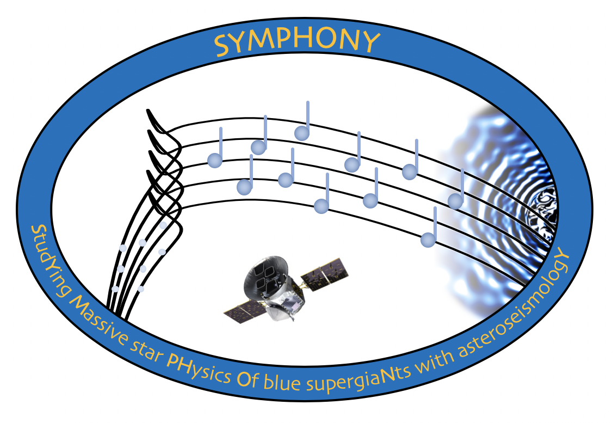
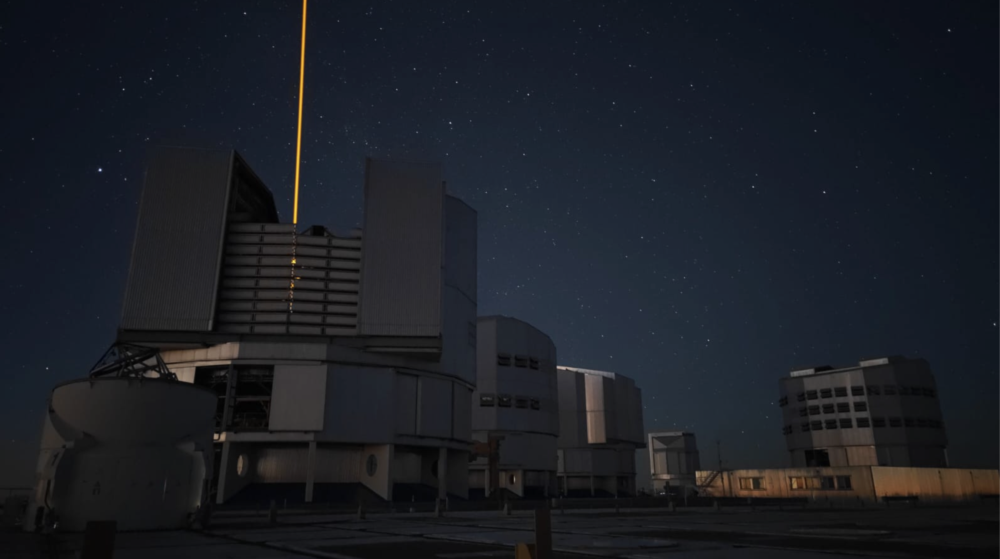
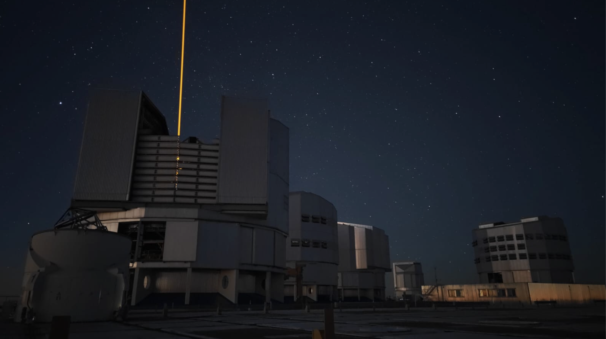

Research
Asteroseismology: a brief overview

Bowman (2020, Fron. Space Sci. Astron., 7, 70), 'Asteroseismology of high-mass stars: new insights of stellar interiors with space telescopes'
Burssens, Bowman, et al. (2023, Nature Astronomy 7, 913-930), 'A calibration point for stellar evolution from massive star asteroseismology'
Bowman et al. (2019, Nature Astronomy 3, 760-765), 'Low-frequency gravity waves in blue supergiants revealed by high-precision space photometry'
Bowman (2023, Astrophys. Space Sci. 368, 107), 'Making waves in massive star asteroseismology'
ERC Starting Grant
ERC MSCA Postdoctoral Fellowships
Royal Astronomical Society (RAS) Fellowships
Royal Society University Research Fellowship (URF)
Royal Society Dorothy Hodgkin Fellowship
Royal Society Newton International Fellowship
STFC Ernest Rutherford Fellowship (ERF)
UKRI Future Leader Fellowship (FLF)

KU Leuven CubeSpec mission website
Raskin et al. (2018, SPIE, 10698), 'CubeSpec: low-cost space-based astronomical spectroscopy'
Bowman et al. (2022, A&A, 658, A96), 'The CubeSpec space mission. I. Asteroseismology of massive stars from time-series optical spectroscopy: Science requirements and target list prioritisation'
Asteroseismology is the study of oscillations inside stars, which telescopes capture as changes in their surface brightness. The detection of stellar oscillation frequencies allows us to probe the physics of stellar structure and evolution, with the ultimate goal of asteroseismology being to improve our understanding of the interior physical conditions and processes for a diverse range of stars. The quality of space observations, such as from the CoRoT, Kepler/K2 and TESS space telescopes, provide an excellent opportunity to study physics that is not currently well understood for massive stars.
My current UKRI Frontier Research Grant, SYMPHONY (2023-2028; [EP/Y031059/1]), focuses on asteroseismology of massive stars, which are those that will eventually explode as violent supernovae and leave behind a neutron star or black hole. The project is using existing and developing new techniques for applying asteroseismology and determining the physical properties of massive stars, with a particular focus on Blue Supergiants, such as their interior rotation profiles, masses and ages. These properties are not accurately known for massive stars because our best current theoretical models contain large uncertainties. Massive stars pulsate in gravity and pressure mode oscillations which probe the deep stellar interiors and radiative envelopes, respectively, thus provide excellent insight of the physics at work within stellar interiors. The ongoing TESS mission is targeting thousands of massive stars thanks to my several TESS GI proposals as PI spanning cycles 1-6. In addition to these new TESS data, the SYMPHONY project is exploiting high-resolution spectroscopy from ESO, Mercator, and SONG, and the upcoming KU Leuven CubeSpec mission.
Read more about massive star asteroseismology:
SLF variability: Internal gravity waves
I am also interested in the search for and interpretation of the signatures of stochastic internal gravity waves in massive stars. As part of this work, I led the project to discover that essentially all massive stars have Stochastic Low Frequency (SLF) variability in time series photometry, which is consistent with predictions from numerical simulations of stochastic gravity waves excited by core convection. In the past, I performed this research under the framework of Prof. Conny Aerts' ERC advanced grant: MAMSIE (Mixing and Angular Momentum tranSport of massIvE stars; 2016-2020), but have since developed its methodology and results considerably. The ultimate goals are to combine observations with 3D hydrodynamical simulations and improve our understanding of mixing and angular momentum transport caused by stochastic internal gravity waves within stellar structure and evolution theory for massive stars.
Read more about gravity waves:
External funding opportunities to work at Newcastle University:
The following are different external funding opportunities aimed at early-career researchers who may wish to carry out astrophysics research at Newcastle University. Please check the specific call of the funder for all necessary details. In general, such grants require several months of preparation time, so please contact Newcastle University as host institute well ahead of the funder's deadline. Please feel free to reach out with any questions.
Find out more about my resesearch...
A full list of my publications, conferences, seminars, observing proposals (etc) is included in my Curriculum Vitae (last updated 20/10/2025), or via the NASA/ADS and Google Scholar links below:
The ESA/KU Leuven CubeSpec space mission
The instrument team of the Institute of Astronomy at KU Leuven are currently building the ESA/KU Leuven CubeSpec space mission, which is a cubesat platform dedicated to massive star asteroseismology with a scheduled launch in early 2026. CubeSpec is a fully funded ESA in-orbit proof-of-concept mission to assemble high-resolution time-series optical spectroscopy of pulsating massive stars and passed ESA preliminary design review in 2021. These CubeSpec data will be invaluable in enabling asteroseismology of pulsating massive stars, which typically exhibit line profile variability that can be used to identify the geometry of their pulsation modes in terms of spherical harmonics. High-resolution, time-series optical spectroscopy of massive stars will also be invaluable for studying their atmospheric (e.g. winds and mass loss) and extrinsic (e.g. binarity) sources of variability. The CubeSpec mission data will be unique as high-cadence, high-resolution, optical spectroscopy spanning several months from a space telescope is currently not available for massive stars.
Read more about CubeSpec's technical specifications:
Read more about CubeSpec's asteroseismic science case:
 
